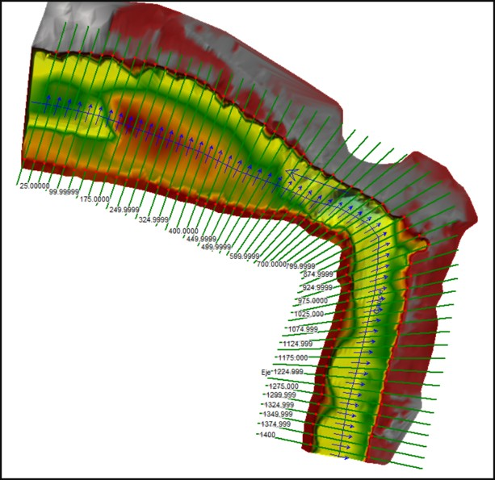

Hydrology · HEC-RAS · Scour
Integrated river hydraulics and scour assessment
A complete hydrological, hydraulic and scour study for a site affected by a mass-movement event along a major Colombian river.
- Full technical workflow and reporting
- Depth, velocity and inundation interpretation
- Return-period-dependent scour assessment